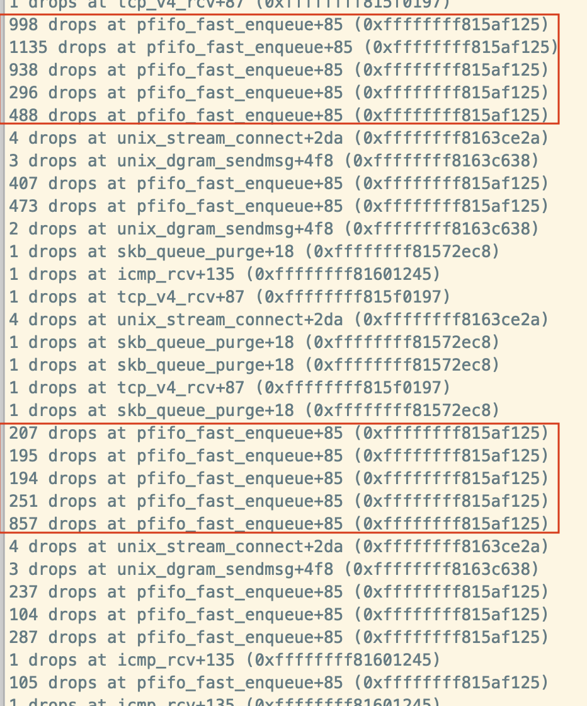

2020.02.11
[TOC]
小鱼连连APP在线直播教学场景， 该APP在网络层采用了UDP协议进行传输。业务部署在虚拟机上，因此本篇着重介绍的是在虚拟机内的调整。
在把虚拟机网卡的带宽限制提升至5Gbits/s时，业务压力通过负载控制给到每个节点不超过120MBytes/s的带宽就不能再提升了。
> 修改网卡带宽的方法：
>
> 1. 找到虚拟机的domain
> # virsh list
> Id Name State
> ----------------------------------------------------
> 42 xyylcs09-1451 running
> 44 xyylcs20-1465 running
>
> 2. 查看虚拟机的虚拟机网卡
> # virsh domiflist 44
> Interface Type Source Model MAC
> -------------------------------------------------------
> vnet4 bridge vswitch-yw virtio fa:16:3e:90:11:22
>
> 3. 查看当前虚拟机网卡带宽
> # virsh domiftune 44 vnet4
> inbound.average: 131072
> inbound.peak : 131072
> inbound.burst : 0
> inbound.floor : 0
> outbound.average: 131072
> outbound.peak : 131072
> outbound.burst : 0
>
> 4.调整当前虚拟机网卡带宽
> # virsh domiftune 44 vnet4 --inbound 655360,655360 --outbound 655360,655360 --live
>
> # virsh domiftune 44 vnet4
> inbound.average: 655360
> inbound.peak : 655360
> inbound.burst : 0
> inbound.floor : 0
> outbound.average: 655360
> outbound.peak : 655360
> outbound.burst : 0进行正式调试前，首先使用iperf进行了最大限度的UDP100个线程的压力测试，如下：
可以看到上图测试结果丢包率10%以上，该图测试的线程少，100的没有存下来，丢包率更严重。
此时进行dropwatch抓包分析dropwatch -l kas （该包需要安装,此输出为演示）
# dropwatch -l kas
Initalizing kallsyms db
dropwatch> start
Enabling monitoring...
Kernel monitoring activated.
Issue Ctrl-C to stop monitoring
3 drops at tpacket_rcv+5f (0xffffffff816673ef)
1 drops at skb_queue_purge+18 (0xffffffff8155e028)
3 drops at tpacket_rcv+5f (0xffffffff816673ef)
2 drops at tcp_v4_rcv+87 (0xffffffff815d6437)
2 drops at __udp4_lib_rcv+765 (0xffffffff815e26e5)
1 drops at tpacket_rcv+5f (0xffffffff816673ef)
4 drops at tpacket_rcv+5f (0xffffffff816673ef)
3 drops at tpacket_rcv+5f (0xffffffff816673ef)
3 drops at __udp4_lib_rcv+765 (0xffffffff815e26e5)
1 drops at tpacket_rcv+5f (0xffffffff816673ef)
如图所示发现大量包(连续几百的出现是异常丢包)的是在pfifo_fast_enqueue后offset+50的地址处。
dropwatch的使用方法此处略。
最简单的方法就是搜一下这个函数， 网上很多，直接就有人告诉了 要修改txqueuelen。
通过代码查看，这个是tc的qos里的一个队列函数，进入该队列的时候队列内存空间满了。
int dev_queue_xmit(struct sk_buff *skb) { ………………. q = dev->qdisc; if (q->enqueue) { /* 对应于pfifo_fast_enqueue 函数*/ int ret = q->enqueue(skb, q); /*启动这个设备的发送，这里涉及到两个函数pfifo_fast_dequeue ，pfifo_fast_requeue 稍后介绍*/ qdisc_run(dev); return; } static int pfifo_fast_enqueue(struct sk_buff skb, struct Qdisc qdisc) { ………….. list = ((struct sk_buff_head*)qdisc->data) + prio2band[skb->priority&TC_PRIO_MAX]; /*首先确定这个数据包的优先级，决定放入的队列*/ if (list->qlen <= skb->dev->tx_queue_len) { __skb_queue_tail(list, skb); /*将数据包放入队列的尾部*/ qdisc->q.qlen++; return 0; } …………….. }
此处确认环境中使用了TC
~# tc qdisc show dev eth0 qdisc htb 1: root refcnt 92 r2q 10 default 11 direct_packets_stat 0 qdisc sfq 113: parent 1:13 limit 127p quantum 1514b divisor 1024 perturb 5sec qdisc sfq 111: parent 1:11 limit 127p quantum 1514b divisor 1024 perturb 5sec qdisc sfq 112: parent 1:12 limit 127p quantum 1514b divisor 1024 perturb 5sec
调整虚拟机的网卡txqueuelen, 修改方法:
紫光云的虚拟机网卡默认值为1000,此处我们修改为5000, 值得增大会导致延时增加，所以要找到最合适的值，刚好不丢包，又能满足带宽需求。
修改方法如下：
echo 5000 > /sys/class/net/eth0/tx_queue_len
or
ifconfig eth0 txqueuelen 5000
or
ip link set eth0 txqueuelen 5000
以上均是临时修改方法。
永久设置方法，以及以后新建虚机自动更新txqueue方法：
将命令加入自启动或从物理机修改
or
在所有计算节点添加文件：
# cat /etc/udev/rules.d/60-vm-tap.rules
ACTION=="add", KERNEL=="tap?*", RUN+="/sbin/ip link set %k txqueuelen 5000"
所有计算节点执行：
/sbin/udevadm control --reload-rules修改后再看iperf输出
此时测试100个10m线程已然完全不丢包。该值调整无异常
经过第一轮参数调整后，反馈带宽增加到120M，再调txqueuelen已经不能提升带宽了。
此时执行netstat -su查看udp丢包情况,如下:
通过查看UDP段的网卡统计信息， 发现send buffer 和receive buffer都有错误,
一般认为这是socket接收内存不足导致， 可以增加rmem的size来处理该问题:
drop信息：
大量udp4_lib_rcv offset 765的地址处drop包; 经查看该处为udp协议层的实现。
一般是包非法或者socket没找到以及队列满，队列部分代码如下：
if (sk_rcvqueues_full(sk, skb, sk->sk_rcvbuf)) goto drop; /* * Take into account size of receive queue and backlog queue * Do not take into account this skb truesize, * to allow even a single big packet to come. */ static inline bool sk_rcvqueues_full(const struct sock *sk, const struct sk_buff *skb, unsigned int limit) { unsigned int qsize = sk->sk_backlog.len + atomic_read(&sk->sk_rmem_alloc); return qsize > limit; }修改该段内存size为25MB（根据实际情况来增加至drop现象降低，过大会导致雪崩效应），如下
sysctl -w net.core.rmem_max=26214400 sysctl -w net.core.rmem_default=26214400 sysctl -w net.core.wmem_default=26214400 sysctl -w net.core.wmem_max=26214400 or echo size_value > /proc/sys/net/core/wmem_default / ../..还可以通过如下文件观察udp状态 /proc/net/snmp /proc/net/udp /proc/net/snmp
此外, 在中断的下半部，ksoftirqd的调用中poll从skb中读取包的过程每次处理包的的数量和时间也可以优化，
cat /proc/net/softnet_stat
00001346 00000000 00000000 00000000 00000000 00000000 00000000 00000000 00000000 00000000
0000d884 00000000 00000000 00000000 00000000 00000000 00000000 00000000 00000000 00000000
0003bda0 00000000 00000003 00000000 00000000 00000000 00000000 00000000 00000000 00000000
00006964 00000000 00000000 00000000 00000000 00000000 00000000 00000000 00000000 00000000
每一行代表一个 struct softnet_data 变量。因为每个 CPU 只有一个该变量，所以每行其实代表一个CPU每列用空格隔开，数值用 16 进制表示
第一列 sd->processed，是处理的网络帧的数量。如果你使用了 ethernet bonding， 那这个值会大于总的网络帧的数量，因为 ethernet bonding 驱动有时会触发网络数据被 重新处理（re-processed）
第二列，sd->dropped，是因为处理不过来而 drop 的网络帧数量。后面会展开这一话题
第三列，sd->time_squeeze，由于 budget 或 time limit 用完而退出 net_rx_action 循环的次数
接下来的 5 列全是 0
第九列，sd->cpu_collision，是为了发送包而获取锁的时候有冲突的次数
第十列，sd->received_rps，是这个 CPU 被其他 CPU 唤醒去收包的次数
最后一列，flow_limit_count，是达到 flow limit 的次数。flow limit 是 RPS 的特性
如果第三列有不为0的就需要调整此项,应为time_limit或者budget用完而退出net_rx_action循环的次数
sysctl -w net.core.netdev_budget=600 （默认值是:300 ）
如果在启用了RPS的网卡中，此处第二列丢包则需要增加backlog的值。
sysctl -w net.core.netdev_max_backlog=2000 (默认值是:1000)
RPS开启后消耗的时间会体现在top的si字段之后。
虚拟机目前都是单队列网卡没有开启RSS。经过这些调整后，虚拟机业务带宽可以跑满网卡带宽。
关闭打印时间戳： sysctl -w net.core.netdev_tstamp_prequeue=0开启RPS或RFS，见参考文档。
虚拟机采用vxlan网络，经过封装后报文长度增加50个字节，因此需要将虚拟机网卡mtu降低为1450。
https://arthurchiao.github.io/blog/tuning-stack-rx-zh/#chap_10.3
https://arthurchiao.github.io/blog/tuning-stack-tx-zh/
https://ylgrgyq.github.io/2017/07/23/linux-receive-packet-1/